Side by side private pool villas, away from the crowds an invitation to enjoy Bali as it truly is.
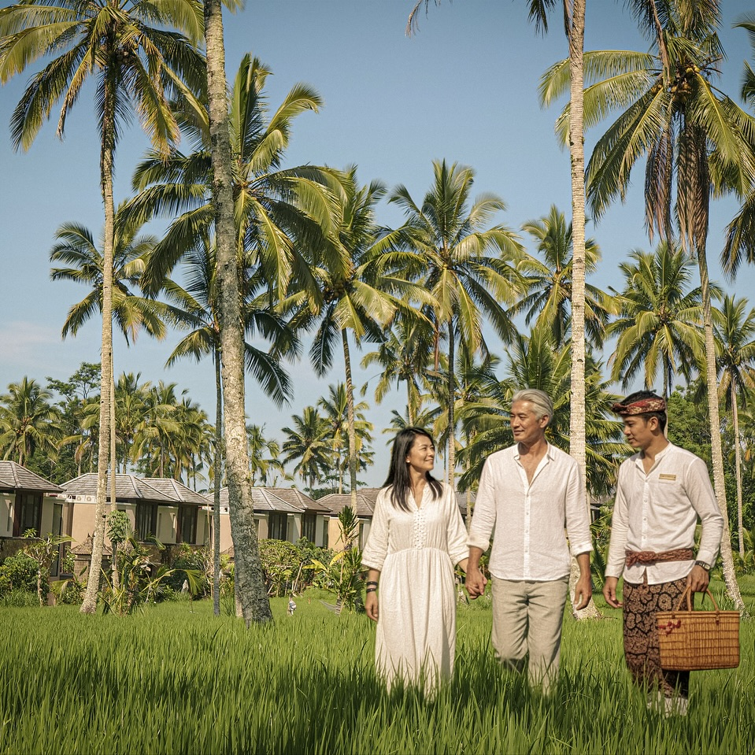
Deep in the heart of Tegalsuci Village, Khastana Hadi Resort welcomes you to experience the peaceful and quiet life of a countryside retreat. Featuring back-to-nature private pool villas, cradled by stunning paddy fields and cool air filled with the scent of the earth this is a place where time stands still and nature takes centre stage.
A boutique resort opened in August 2024, nestled amidst the highland's lush paddies, just 15 minutes from Mount Batur and 20 minutes from Kintamani. You'll find yourself returning to simpler times, where slow living is not a choice — it's simply the way things are here.
Each villa is a private world flanked by peaceful lush greenery, cool highland breezes, and the warmth of village life in Tegallalang.
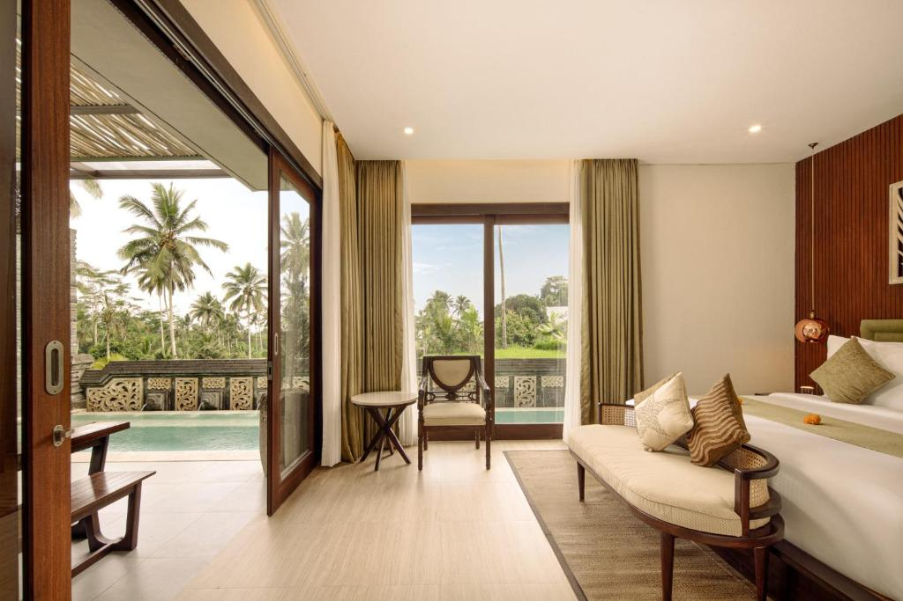
Most PopularOur flagship villa an exclusive countryside escape where modern luxury meets the open air of Tegallalang's highlands. Designed for those who want it all, without compromise.
View Details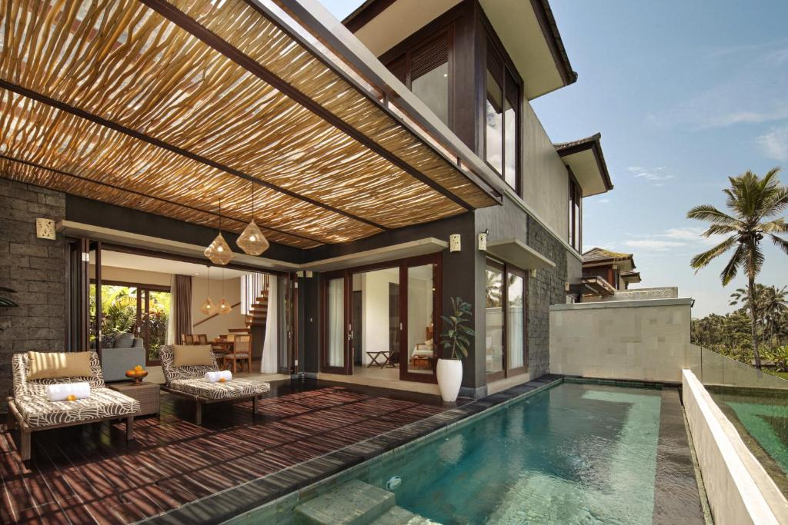
An authentic nature retreat designed for healing and deep rest. Modern elegant interiors blend open spaces with tranquility the essence of an elegant nature escape.
View Details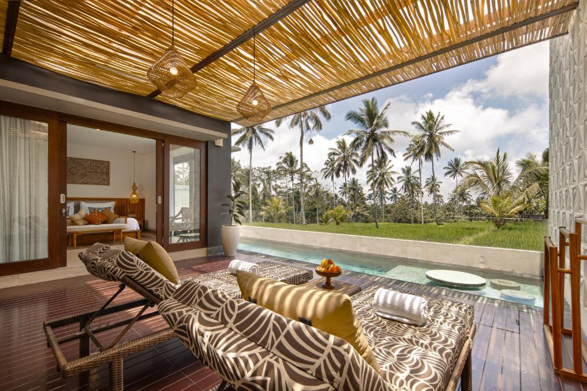
SignatureEmbrace the timeless simplicity of a traditional Balinese home. Warm rustic interiors, open-air living spaces, and teak wood elements where stillness welcomes you like an old friend.
View DetailsCrafted for those who seek absolute privacy and deep connection. Inspired by the Penyengker the sacred Balinese walls — this villa honours the way Balinese homes embrace both protection and intimacy. Features an open-air entertainment space and soothing water fountain.
Enquire NowAt Khastana Hadi, retreat is more than a state of mind it's a way of life. Every experience is curated to bring you closer to the authentic soul of Tegallalang and the Balinese way of living.
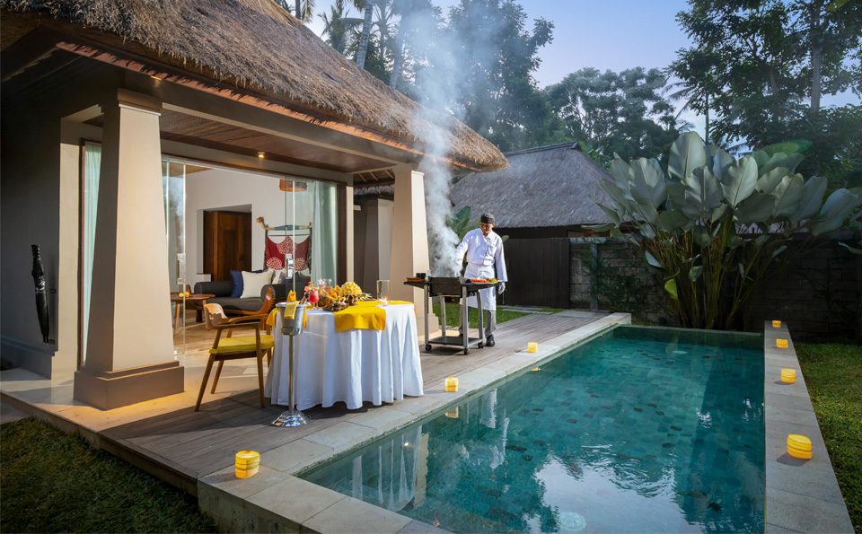
Inspired by megibung Bali's tradition of shared feasts. Fresh catch marinated in Balinese spices, sizzled over fire. Fully Halal-certified.
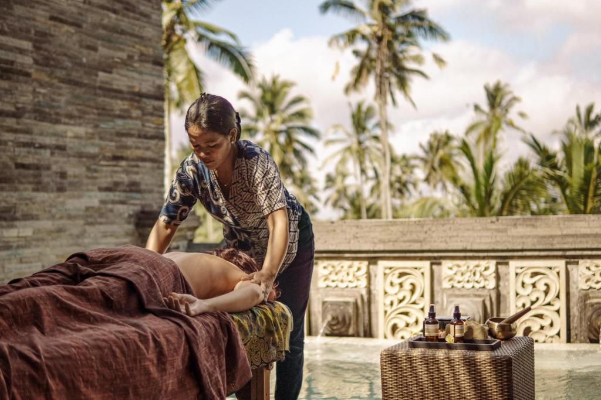
Passed down through generations, rhythmic strokes ease tension by the paddy fields let centuries of healing wisdom restore you.
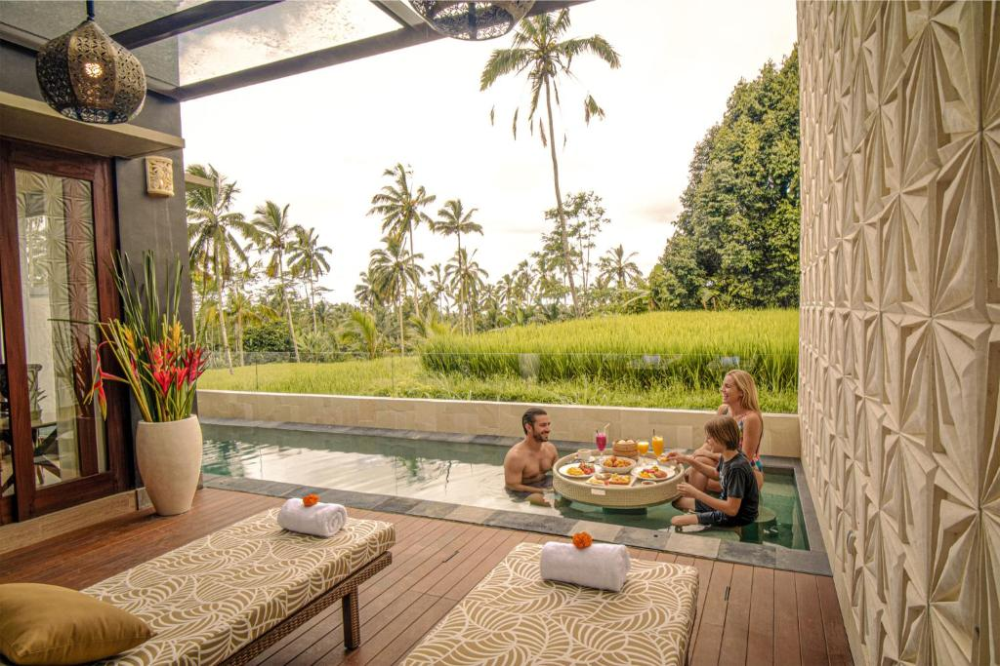
Pick fresh turmeric and kaffir lime, grind spices by hand, and cook over an open flame under a local chef's guidance.
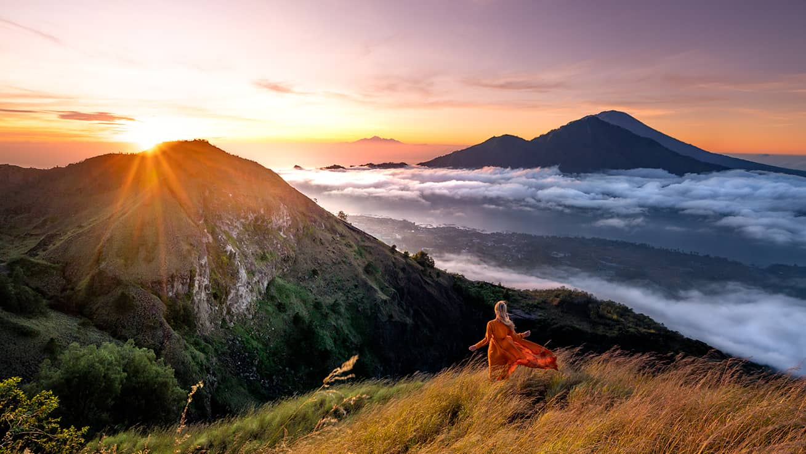
Just 30 minutes away begin your day with a breathtaking jeep sunrise over Mount Batur. A memory that will last a lifetime.
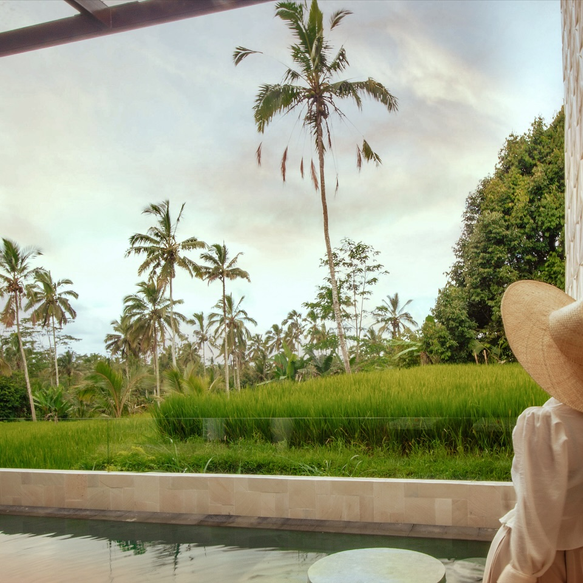
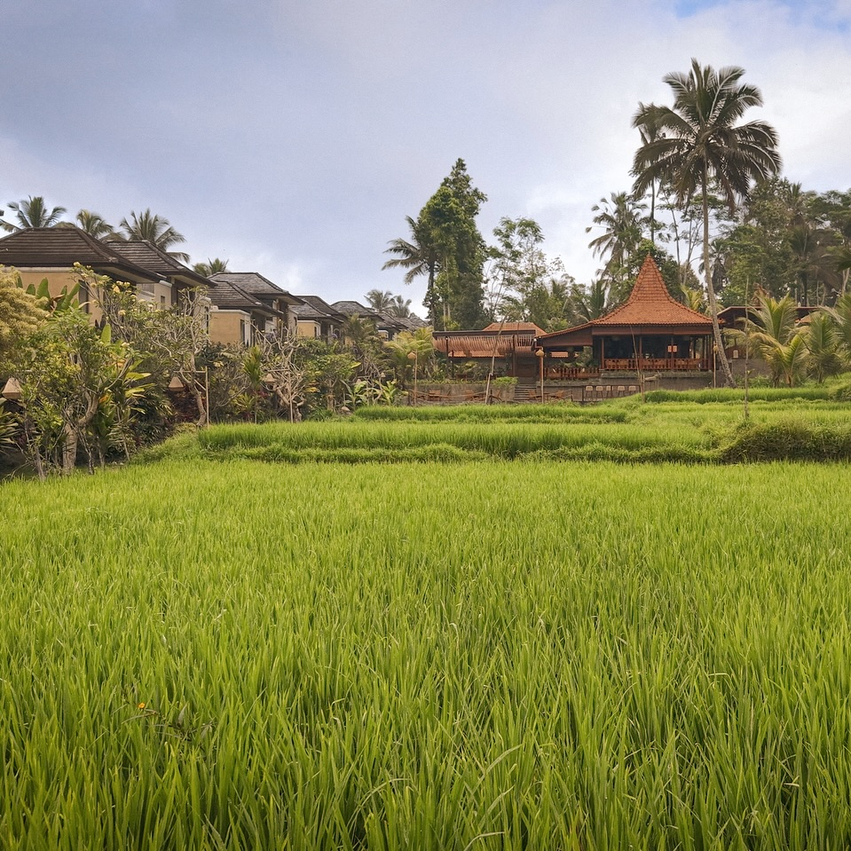
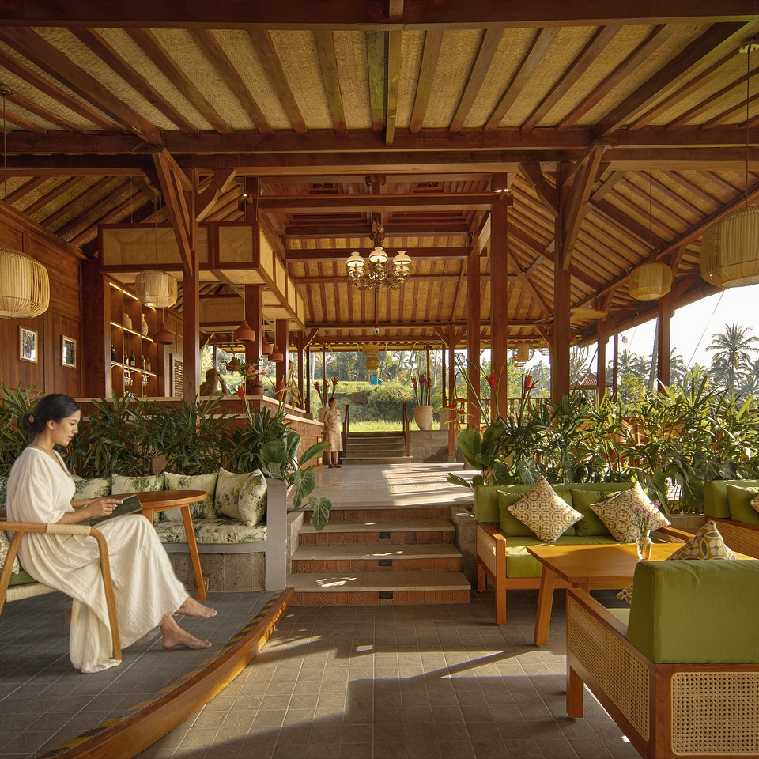
"Celebrating our anniversary in Bali was nothing short of magical, and Khastana Hadi Resort Ubud made it unforgettable. We stayed in a gorgeous 3-bedroom villa with an indoor pool - spacious, spotless, and kept at a naturally_"

"The villa is clean, well-maintained and spacious. The service by the team, especially Andharu. Dika and Indra is impeccable. Upon arrival at the resort, we were given a very warm Balinese Welcome ritual, and were greeted by very nice display as we celebrate our 20 year Wedding Anniversary there..."

"It's hard to recall another time when hospitality felt this warm, sincere, and personal. Our time at Khastana Hadi Resort in Ubud wasn't just a holiday-it was a heartfelt experience that our family will carry with us for a very long time..."

Private pool villas in Tegallalang where the highlands meet slow living.
Book a Stay